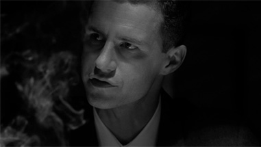
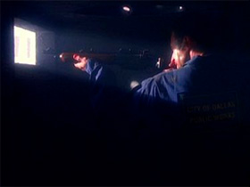
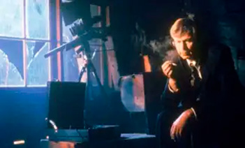

“Musings of a Cigarette Smoking Man” es un episodio clave de The X-Files que explora la vida y los posibles orígenes del enigmático antagonista conocido como el Fumador.
La trama se presenta como una narración de los Pistoleros Solitarios, quienes investigan y especulan sobre la verdadera identidad y pasado del Fumador.
En el episodio se le atribuyen acciones como la participación en el asesinato de John F. Kennedy, la manipulación de la carrera de Martin Luther King Jr., y su influencia en
operaciones secretas del gobierno estadounidense. Estas escenas lo presentan como un h raciones secretas del gobierno estadounidense. Estas escenas lo presentan como un hombr
e que ha estado detrás de algunos de los momentos más oscuros de la historia contemporánea, siempre moviéndose en las sombras y tomando decisiones que afectan el rumbo del pa
ís y del mundo.
Sin embargo, el capítulo también revela un aspecto más humano y contradictorio del personaje: su pasión por la escritura. El Fumador aparece como un novelista que envía relat
os a revistas, pero que nunca logra ser publicado bajo su verdadero nombre. En un giro irónico, cuando finalmente consigue que una de sus historias sea aceptada, se le exig o
irónico, cuando finalmente consigue que una de sus historias sea aceptada, se le exige modificarla de manera que pierde su esencia, lo que lo lleva a renunciar a su sueño lit
erario.
Este contraste entre su vida secreta como arquitecto de conspiraciones y su frustración personal como escritor añade complejidad a su figura, mostrando que detrás del villano
existe un hombre con aspiraciones y decepciones.
El episodio juega con la ambigüedad: nunca queda claro si lo narrado es verdad, ficción o una mezcla de ambas cosas. Esta incertidumbre refuerza el misterio que rodea al Fumador
y lo convierte en un personaje aún más intrigante dentro del universo de The X-Files. Además, la estructura del capítulo, con un tono casi de sátira y reflexión, lo distingue
de otros episodios más convencionales de la serie.
“Musings of a Cigarette Smoking Man” fue visto por más de 17 millones de personas en su emisión inicial y obtuvo críticas mayormente positivas, destacándose por su originalidad
y por ofrecer una mirada distinta a uno de los personajes más icónicos de la serie


